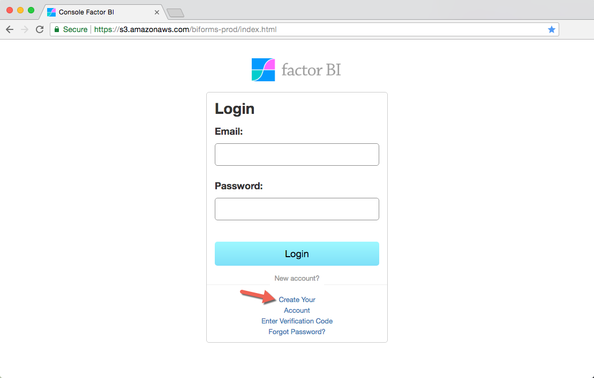

Create your Account¶
Open Factor BI Console.
Click Create Your Account and follow steps.

Is your AWS Account Ready?¶
If you haven't created the necessary services on your AWS Account please follow these steps before your first synchronization.
Not familiar with AWS or just want to skip creating AWS related services?
>> Write us, we can help you.
Configure your first service¶
- Log in to the Console.
- On the left pane, go to Service Numbers, click Edit then New.
-
Edit Database and Description, then click Edit again to save.
Database must be all lowercase and don't use any special characters.
-
Go to left pane RDS Instances and click under Hostname.
Fill the following fields with the information you got from testing your connection to Aurora-MySQL:
- Hostname or Endpoint
- Username
- Password
- Port
Download Bipost Sync¶
Download and setup Bipost Sync on your Windows.
Don't forget to user your Specific Bucket when syncing.